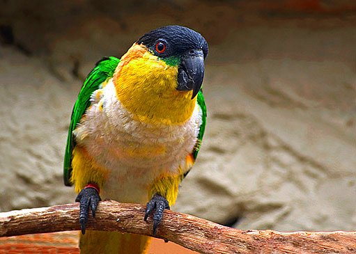

Galerie

Amazónek černotemenný (Pionites melanocephalus, též amazonek černotemenný)
je jeden ze dvou druhů rodu Pionites z čeledi papouškovitých
Žije v amazonských pralesích na sever od Amazonky a na východ od řeky Ucayali
v severozápadní Brazílii, severní Bolívii, jihovýchodní Kolumbii, Francouzské Guyaně
Guyaně, východním Peru, Surinamu, jihovýchodní Venezuele a východním Ekvádouru.
V přírodě žijící amazonci se vyskytují obvykle ve skupinách po deseti, ale někdy jich v jedné skupině může být až třicet.
Mimo zajetí se potrama amazonků černotemenných skládá z většinou z květů, růžných šťav, semen a hmyzu.
Amazonek černotemenný je středně velký papoušek s krátkým ocasem. Průměrně dorůstá výšky 23 cm a hmotnosti do 170 g.
Má černou hlavu, temeno a čelo, žlutooranžovou hlavu, krk a břicho, bílou hruď, zelená křídla a černý zahnutý zobák.
Samce a samici je velmi těžké rozpoznat, jelikož mají stejné peří. Jediná cesta, jak je rozpoznat, je operativní nebo pomocí DNA.
Existují dva poddruhy amazonka černotemenného. Mohou se volně křížit a druhy s neurčitou barvou jsou časté:
Amazónek černotemenný východní (Pionites melanocephalus melanocephalus)
vyskytuje se na východě oblasti amazonků. Má oranžová stehna a spodní část břicha, tmavě oranžovou šíji
a bílou hruď, nejčastější zbarvení
Amazónek černotemenný západní (Pionites melanocephalus pallidus) – vyskytuje se na západě oblasti amazonků.
Stehna a spodní část břicha má žluté, šíji relativně bledou a žlutě zabarvenou hruď (většinou málo viditelné, hruď je v přírodě obvykle špinavě bílá)
Tento text byl zkopírován z Wikipedie.
Galerie |
||
|---|---|---|
|  | |
| ||
| |
| Hello world | |||||||||
|---|---|---|---|---|---|---|---|---|---|
| Hello | Good morning | Hello | Hello | Hello | Hello | Hello | Hello | Hello | |
| Good morning | Hello | Hello | Hello | Hello | Hello | Hello | Hello | Hello | Hello |
| Hello | Hello | Hello | Hello | Hello | Hello | Hello | Hello | Hello | |
| Hello | Good morning | Hello | Hello | Hello | Hello | Hello | Hello | Hello | |
| Good morning | Hello | Hello | Hello | Hello | Hello | Hello | Hello | Hello | Hello |
| Hello | Hello | Hello | Hello | Hello | Hello | Hello | Hello | Hello | |
| Hello | Good morning | Hello | Hello | Hello | Hello | Hello | Hello | Hello | |
| Good morning | Hello | Hello | Hello | Hello | Hello | Hello | Hello | Hello | Hello |
| Hello | Hello | Hello | Hello | Hello | Hello | Hello | Hello | Hello | |
| Hello | Good morning | Hello | Hello | Hello | Hello | Hello | Hello | Hello | |
| Good morning | Hello | Hello | Hello | Hello | Hello | Hello | Hello | Hello | Hello |
| Hello | Hello | Hello | Hello | Hello | Hello | Hello | Hello | Hello | |